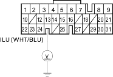
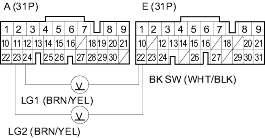

- Press the brake pedal.
Are the brake lights ON?
YES - Go to step 2.
NO - Repair faulty brake light circuit. 
- Turn the ignition switch ON (II).
- With the accelerator pedal released, press the brake pedal.
- Measure the voltage between PCM connector terminal E13 and body ground.
PCM CONNECTOR E (31P)

Wire side of feale terminals
Is there battery voltage?
YES - Check for an open in the wire between PCM connector terminal E13 and the multiplex control unit. If the wire is OK, check for a loose terminal fit it the multiplex control unit connectors. If necessary, substitute a known-good multiplex control unit and recheck.
NO - Go to step 5.
- Turn the ignition switch OFF.
- Disconnect PCM connectors A (31P) and E (31P).
- Press the brake pedal and measure the voltage between PCM connector terminals E22 and A23 or A24.
PCM CONNECTORS

Is there battery voltage?
YES - Release the brake pedal and go to step 8.
NO - Repair open in the wire between PCM connector terminal E22 and the brake pedal position switch.
- Reconnect PCM connectors A (31P) and E (31P).